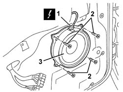

5570T90 FRONT SPEAKER - R R
- Path
- Procedures > 55 ELECTRICAL EQUIPMENT > 5570 ACCESSORIES > 5570T CAR RADIO AND CAR TELEPHONE > 5570T90 FRONT SPEAKER - R R
- Kind
- repair procedure (removal / refitting; the operation number is the code)
- Applies to
- all engines; all production periods
- Interactive page
- https://sloeber94.github.io/elrnDB-aGt/en/#/125001717
Applies to: all engines; all production periods
 Removing
Removing
 Refitting
RefittingOp. 7005C44 INTERIOR HANDLE PANEL - R R
Op. 7005E12 CORNER COVER OF ONE FRONT SIDE DOOR, LH OR RH R R
(for driver's door)
Op. 7005M12 PASSENGER SIDE FRONT DOOR ELECTRICALLY OPERATED WINDOW SWITCH - R R
(for passenger door)
Op. 7005E08 FRONT SIDE DOOR INTERIOR PANEL R R
1. Disconnect the electrical connection.
Name | Connector | |
|---|---|---|
1 | Speaker in driver's front door | See P35 SPEAKER IN DRIVER'S FRONT DOOR |
Name | Connector | |
|---|---|---|
1 | Speaker in front passenger door | See P36 SPEAKER IN FRONT PASSENGER DOOR ( FRONT PASSENGER DOOR ) |
2. Undo the bolts.
3. Recover the speaker.

Applies to: all engines; all production periods
Refitting
RemovingCheck that the speaker is not damaged.
Position the speaker.
Tighten the bolts.
Connect the electrical connection.
Check the operation of the speaker.
Op. 7005E08 FRONT SIDE DOOR INTERIOR PANEL R R
Op. 7005M12 PASSENGER SIDE FRONT DOOR ELECTRICALLY OPERATED WINDOW SWITCH - R R
(for passenger door)
(for driver's door)
Op. 7005E12 CORNER COVER OF ONE FRONT SIDE DOOR, LH OR RH R R
Topics linked from this page (5)
- 7005C44 INTERIOR HANDLE PANEL - R R
- 7005E08 FRONT SIDE DOOR INTERIOR PANEL R R
- 7005E12 CORNER COVER OF ONE FRONT SIDE DOOR, LH OR RH R R
- 7005M12 PASSENGER SIDE FRONT DOOR ELECTRICALLY OPERATED WINDOW SWITCH - R R
- 7005M14 SWITCH UNIT CONTROLLING ELECTRIC WINDOWS REAR VIEW MIRRORS AND DOOR LOCK ON DRIVERS SIDE FRONT DOOR R R
Topics that link to this page (19)
- N11 RADIO CANNOT BE HEARD, IS HARD TO HEAR
- N42 I.C.S. DOES NOT GIVE' AUDIO MESSAGES
- 5505B11 FRONT DOOR WIRING - R R
- 7005A04 FRONT SIDE DOOR WATER GUARD PROTECTION - R R OR REPLACE WITH DOOR PANEL REMOVED
- 7005A05 FRONT SIDE DOOR WATER GUARD PROTECTION R R OR ARRANGE
- 7005A28 FRONT SIDE DOOR LIMITER- REPAIR OR REPLACE
- 7005C10 FRONT DOOR OUTER HANDLE - R R WITH DOOR PANEL REMOVED
- 7005C11 FRONT SIDE DOOR OUTSIDE HANDLE R R
- 7005C15 FRONT SIDE DOOR LOCK BARREL (IN HANDLE) - R+R
- 7005C42 FRONT SIDE DOOR BARREL/LOCK CONNECTING LINKAGE - R R WITH DOOR PANEL REMOVED
- 7005C43 LINK CONNECTING FRONT SIDE DOOR BARRELS/CATCH - R+R
- 7005C54 FRONT SIDE DOOR INTERNAL OPENING RETURN MECHANISM (WITH HANDLE) - R R FOR REPAIR OR REPLACE WITH DIFFERENT VERSION
- 7005C55 FRONT SIDE DOOR INTERIOR OPENING RETURN DEVICE (WITH HANDLE) - R+R FOR REPAIR OR REPLACEMENT
- 7005E91 PARTITION ON ONE FRONT DOOR (LH OR RH) - R R WITH DOOR PANEL REMOVED
- 7005M20 FRONT SIDE DOOR ELECTRIC WINDOW SYSTEM - R R WITH DOOR PANEL/SUPPORT FRAME REMOVED
- 7005M21 FRONT SIDE DOOR ELECTRICALLY OPERATED WINDOW - R R
- 7005N20 FRONT SIDE DOOR LOCK MOTOR/CATCH ASSEMBLY - RR WITH DOOR PANEL AND SUPPORT FRAME REMOVED
- 7005N21 FRONT SIDE DOOR LOCK MOTOR-LOCK ASSEMBLEY-R R
- 7205E36 STRIPPING FRONT SIDE DOOR